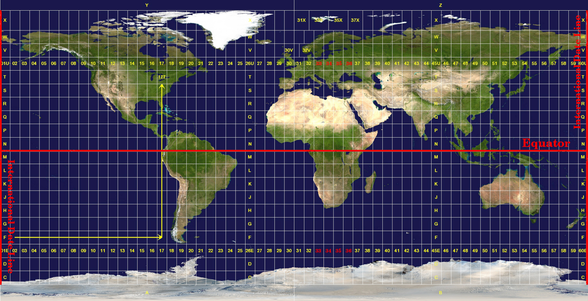

Coordinate Reference Systems¶
Last Time¶
Rasters
Today¶
Coordinate Reference Systems
Map Projections
¶
Coordinate Reference Systems¶
Earth¶

Equatorial circumference: 24,901 miles (40,075 km)
Meridional circumference: 24,860 miles (40,008 km)
Earth¶
Equatorial circumference: 24,901 miles (40,075 km)
Meridional circumference: 24,860 miles (40,008 km)

Coordinate Reference Systems¶
Geographic Coordinate Systems
Projected Coordinate Systems
Geographic Coordinate System¶

Geographic Coordinate System¶
lines of latitude
parallel to the equator
180 equally spaced sections from North to South
each hemisphere divided into ninety sections (0-90 degrees)
lines of longitude
perpendicular to the equator
converge at the poles
0-180 E(+) or W(-) of prime Meridian
Why Math in GIS?¶

Projected Coordinate Systems¶
Universal Transverse Mercator (UTM)¶
Global map projection
60 equal zones of 6 degrees of longitude (1-60)
¶

UTM¶
northing (Y) value
distance from equator in meters
easting (X) value
distance from zone central meridian
Coordinates for Point of interest¶
UTM Zone 35S
35 415,000 m E/ 6,540,000 m N
Coordinates from the point of origin of the zone
intersection of equator and zone central meridian
Southern Hemisphere: northings decrease to the south
UTM: northing (Y)¶
Place of interest: 3,550,000 meters south of the equator
northing (Y): -3,550,00000
Add false northing of 10,000,000
6,450,000m
UTM: easting (X)¶
Central meridian for UTM Zone 35s: 27 degrees easting
Place of interest is 85,000 meters West of this
-85,000m
False easting of 500,000m
easting (X): 415,000
¶
Map Projections¶
Map Projection Characteristics¶
Class
Case
Aspect
Class¶

Case¶

Aspect: Projection’s Center¶
equatorial: centered somewhere along equator
polar: centered about one of the poles
oblique: between poles and equator
Accuracy of Map Projections¶
Angular distortion
Distance distortion
Area distortion
Angular Conformity: Mercator¶
maintain 90 degrees for compaass rose (N,S,E,W)
difficult for large areas
only used for small portions of earth surface
distorts area
uses: navigation and meterological tasks
Equal Distance: Plate Carree Equidistant Cylindrical¶
scale of the map is kept constant
accurate distances from the center of projection to any other place
accurate along given lines
uses: radio and seismic mapping
Equal Area: Mollweide Equal Area Cylindrical¶
preserves proportional relationships of mapped areas to areas on the Earth
uses: when area needs to be measured (density, deforestation)
distortions of angular conformity

Map Projections¶
Each map projection has advantages and disadvantages
The best projection for a map depends on the scale of the map, and on the purposes for which it will be used.
A projection may have unacceptable distortions if used to map the entire African continent, but may be an excellent choice for a large-scale (detailed) map of your country.
On-The-Fly Projection¶
Project starts with a given CRS
Subsequently loaded layers get projected to that CRS
Allows overlays of layers with different CRSs
Next Up¶
QGIS Studio